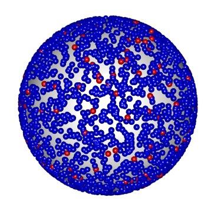
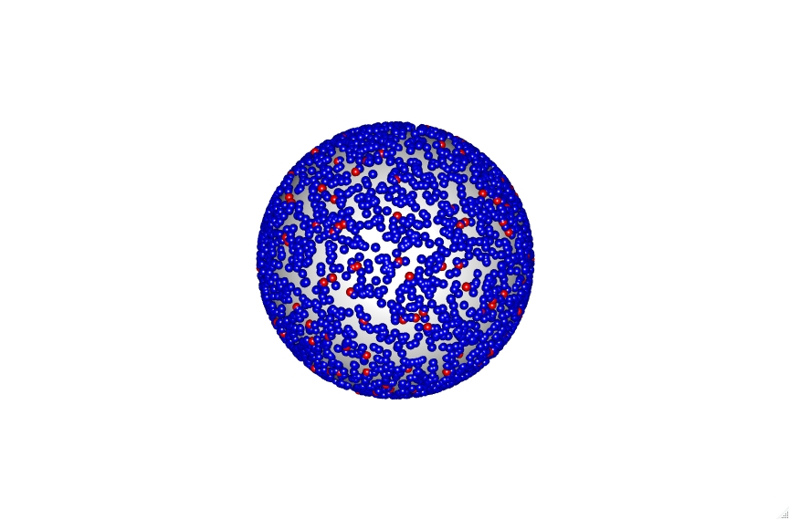
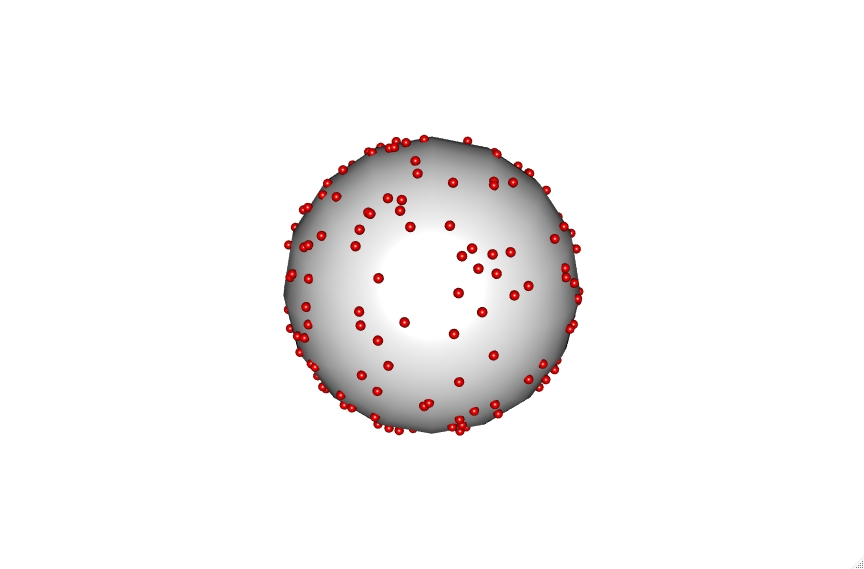
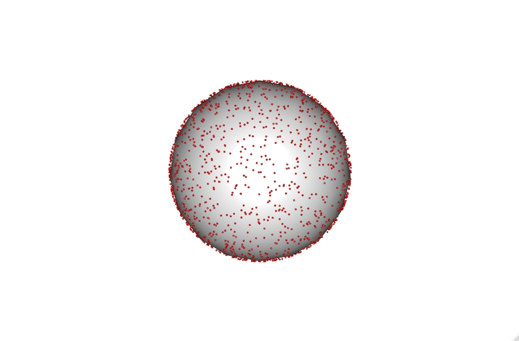
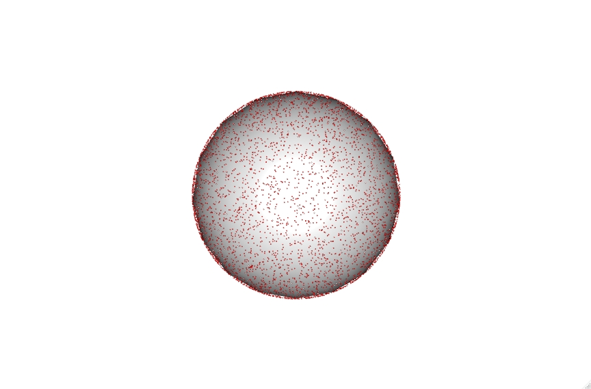
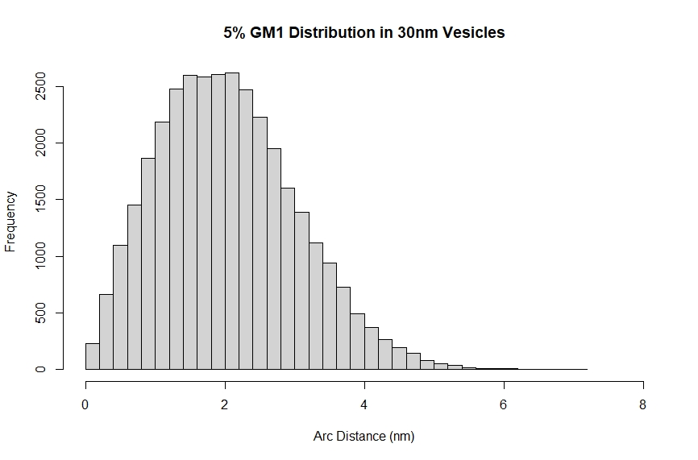

Here I will talk through the math and code needed to model a lipid vesicle and calculate distances between lipids. As well as methods to visualize the modeled liposomes.
First we will load any required libraries of which there is only one (RGL) which is used for the visualization as the rest of the math is relatively simple and built into base R. We will also set a few parameters for our vesicles and lipids.
library("rgl")
# Parameters of the lipid vesicles in question
Lipid1_Pct = 95
Lipid2_Pct = 5
Lipid3_Pct = 0
Vesicle_Diameter = 30
Vesicle_Radius = Vesicle_Diameter/2
Bilayer_Thickness = 5
Lipid_Area = .683
Lipid_Radius = sqrt(Lipid_Area/pi)
Now we will calcualte the number of lipids in the whole vesicle and in the outer layer of the vesicle bilayer. We will also then calcualte the number of lipids of each type we have selected. In this example I am using 95% POPC and 5% GM1 ganglioside.
# Calculates number of lipids in a vesicle and number of each lipid that makes up the vesicle
Num_Lipids = ceiling((4*pi*((Vesicle_Diameter/2)^2)+4*pi*(Vesicle_Radius-Bilayer_Thickness)^2)/Lipid_Area)
Outer_Lipids = ceiling(4*pi*((Vesicle_Diameter/2)^2)/Lipid_Area)
Num_Lipids1 = round(Outer_Lipids*(Lipid1_Pct/100))
Num_Lipids2 = round(Outer_Lipids*(Lipid2_Pct/100))
Num_Lipids3 = round(Outer_Lipids*(Lipid3_Pct/100))
We can now build and visualize the GM1 parts of our vesicle.
# Builds a base sphere for the lipids vesicle
spheres3d(0, 0, 0, radius=1, color="white")
# If you want results to be reproducible
#set.seed(100)
# Randomly select locations for lipid 2
n <- Num_Lipids2
theta <- runif(n,0,2*pi)
u <- runif(n,-1,1)
x <- sqrt(1-u^2)*cos(theta)
y <- sqrt(1-u^2)*sin(theta)
z <- u
# Graphs a 3d representation of these lipids distributed on a sphere
spheres3d(x, y, z, col="red", radius=(Lipid_Radius/Vesicle_Radius))
# Opens the 3d representation in R's viewer
rglwidget()
You can also include the POPC lipids in blue to get a fuller representation of the vesicle. Though you should be careful when doing this larger sized vesicles as the number of lipids increases substantially and will become very computationally intensive. As you can see even with the 30nm vesicle demonstrated here.
# Will try to plot all of the lipids which can be very intensive with larger vesicles
n <- Num_Lipids1
theta <- runif(n,0,2*pi)
u <- runif(n,-1,1)
x <- sqrt(1-u^2)*cos(theta)
y <- sqrt(1-u^2)*sin(theta)
z <- u
spheres3d(x, y, z, col="blue", (Lipid_Radius/Vesicle_Radius))
Click on the vesicle to see an interactive version.

The code also accounts for vesicle diameter to keep sizes accruate which can be seen with the 30, 100 and 200nm vesicles shown below.
Click on the vesicles to see an interactive version. Be aware the 200nm vesicle contains over 9000 lipid points and is therefore highly intensive.



These points can then be utilzied to calculate the average distance between lipids randomly distributed within a vesicle at a selected percentage. To do this we iterate through building thousands of these vesicles and then calculate the minimum chord distance between a selected point and all other points. This gives a straight line distance between the xyz coordinates of these points.
# Reduces the number of iterations based on the number of lipids of this type in the vesicle
iterations = round(50000/n)
# Initializes ChordList for the loops coming up
ChordList <- c()
for (i in 1:iterations){
theta <- runif(n,0,2*pi)
u <- runif(n,-1,1)
x <- sqrt(1-u^2)*cos(theta)
y <- sqrt(1-u^2)*sin(theta)
z <- u
NumValues <- length(x)
for (i in 1:NumValues){
x1 <- x[i]
y1 <- y[i]
z1 <- z[i]
ChordLength <- c()
for (i in 1:NumValues){
x2 <- x[i]
y2 <- y[i]
z2 <- z[i]
ChordLengthx <- sqrt((x2-x1)^2 + (y2-y1)^2 + (z2-z1)^2)
ChordLength <- c(ChordLength, ChordLengthx)
}
ChordLength <- min(ChordLength[ChordLength>0])
ChordList <- c(ChordList, ChordLength)
}
}
These chord lengths can then be corrected based on vesicle radius so that the values are consistent with a vesicle of the selected size. Then they can be used to calculate an arc distance which is a more accurate representation of the distance between lipids on a spherical vesicle.
ChordList <- unique(ChordList)
ChordList <- ChordList*Vesicle_Radius
ChordListLength <- length(ChordList)
ArcList <- c()
for (i in 1:ChordListLength){
ArcListx <- Vesicle_Radius*(2*(asin(ChordList[i]/Vesicle_Diameter)))
ArcList <- c(ArcList, ArcListx)
}
Finally these chord lengths can be combined into a histogram displaying the distribution of minimum distances between lipids within a vesicle. This can used to estimate the potential for multivalent interactions.
Title <- "5% GM1 Distribution in 30nm Vesicles"
hist(ArcList, main = Title, xlab = "Arc Distance (nm)", xlim = c(0,8), ylim = c(0, 2600), breaks = 40)
mean(ArcList)
